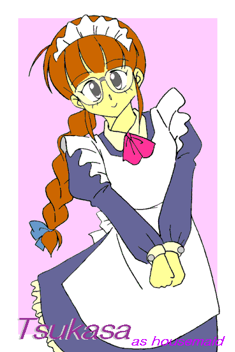

| 「はいはーい、変身美少女二村つかさのページはここだよ〜っ。……みんな、ちゃんと読んでね〜っ」 「誰に向かって何言ってんだよ！？ 姉ちゃん！！」 「……つかっちゃん、その体質は直した方がいいと思うよ」 「でも司くんとなら、どっちに転んでも男と女……問題ないわよね♪」 |

着せ替え少年
〜Ｄｒｅｓｓ ＵＰ Ｂｏｙ〜
作：城弾
Ｄｒｅｓｓ Ｕｐ Ｂｏｙ２ 〜Ｔｒｕｅ Ｌｏｖｅ Ｓｔｏｒｙ〜
Ｄｒｅｓｓ Ｕｐ Ｂｏｙ〜ＥＰＩＳＯＤＥ ＦＩＮＡＬ〜卒業 アナザーバージョン